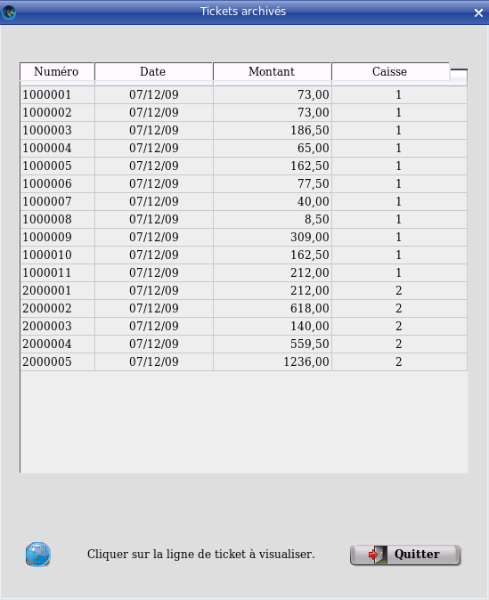

~ Laurux.Pos ~

~ Laurux.Pos ~ |
|
|
|
Historique des tickets.
Les tickets, lorsqu'ils ont été traités pour le passage en comptabilité, ne sont pas détruits.
Comme pour les factures, les tickets disposent d'une
table des historiques dans laquelle sont conservés l'ensemble des
tickets. Il est donc possible, à partir de cette table d'avoir une
visualisation des tickets.
Pour visualiser les tickets il faut aller dans le menu "Caisse", puis "Statistiques" et "Historique tickets"

L'écran donne une liste des tickets archivés en mentionnant leur numéro, la date d'émission, le montant et l'origine (numéro de caisse).
En cliquant sur une ligne on aura le détail du ticket.
----------------------------------------------------------------------------------------------------------------------